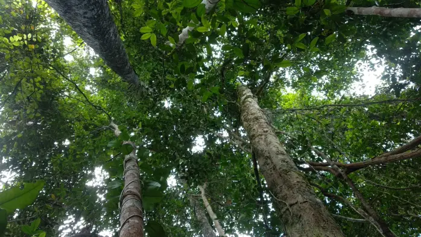

Pentingnya Jaga Kelestarian Hutan, Ini Fungsi Hutan Bagi Kehidupan
Baca Selengkapnya
15+ Manfaat Hutan yang Esensial bagi Kehidupan Bumi
Baca Selengkapnya

Arti Penting Hutan Bagi Kehidupan
Baca SelengkapnyaPentingnya Hutan
Baca SelengkapnyaPentingnya Hutan bagi Kehidupan dan Penelitian yang Dilakukan di Hutan
Baca SelengkapnyaKenali 5 Manfaat Hutan Bagi Kehidupan
Baca Selengkapnya